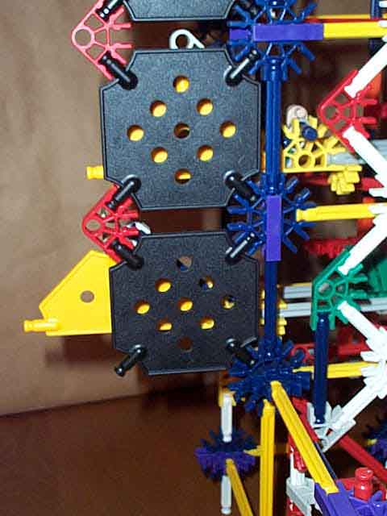

There is one bit state mask for each bit assembly and serves to obstruct the bit state indicator when the bit is in the zero/clear state.
In the picture, the upper bit shown is in the off or zero state and the lower bit is in the on or one state.
